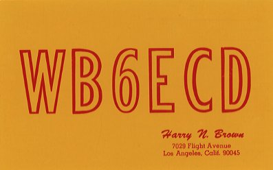
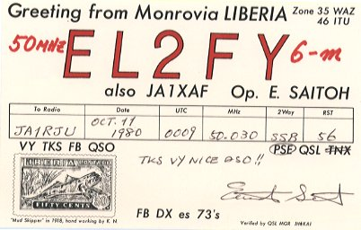

誰にでも記憶に残る忘れられない出来事があるものです。
このコーナーでは6mバンドでのそのような記憶に残る出来事から
当時の6mマンを大いににぎわした“事件”を選んで紹介します。
| Index | Document |
|---|---|
 |
** Esマルチホップで初のW入感 ! (1977.6) **
50MHzで北米大陸と多数交信 |
 |
** ヨーロッパが聞こえた日 ! (1980.3) **
ジブラルタルのZB2VHFのビーコンが聞こえた ! |
 |
** 50MHz WAC完成 ! (1980.10) **
西アフリカ・リベリアのEL2FYとQSO |